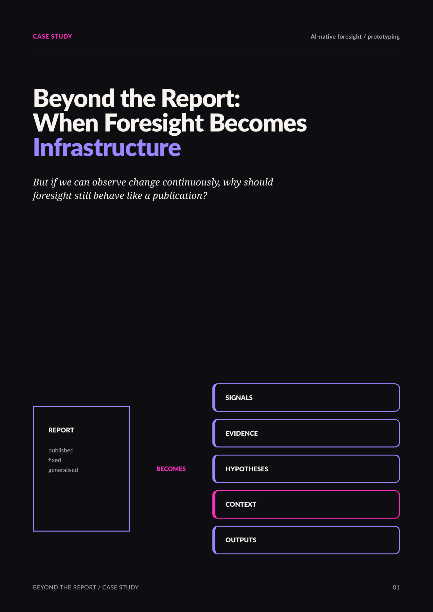

Beyond the Report
What if foresight were not primarily a report, but a continuously evolving intelligence system?

Read the full case study.
The designed edition follows what happened when an AI-native foresight idea had to become operational: from signal abundance and living hypotheses to contextual relevance, explainability, uncertainty and prototypes as research instruments.
The public case study discusses the questions and design principles that emerged from the work. The underlying architecture, implementation and outputs remain proprietary.
The problem
Traditional foresight has a timing problem. By the time a large report has been researched, edited, published and circulated, the environment it describes has already moved.
That raised a more interesting question than “how do we automate a report?”: what would have to change if foresight itself became continuous?
Trends as living hypotheses
Signal detection is not the same as foresight. The useful work happens when evidence is connected, interpreted, challenged and placed into context.
The prototype became a way to investigate several principles: trends as living hypotheses rather than fixed labels; significance as contextual rather than universal; explainability as more important than automation; and personalisation as potentially more valuable than sheer machine speed.
Why build it?
Because architecture decisions expose conceptual assumptions. Once foresight has to move through a real system, vague ideas about “signals”, “trends”, “relevance” and “evidence” suddenly require definitions.
That is where the prototype became a research instrument rather than simply a software demo.